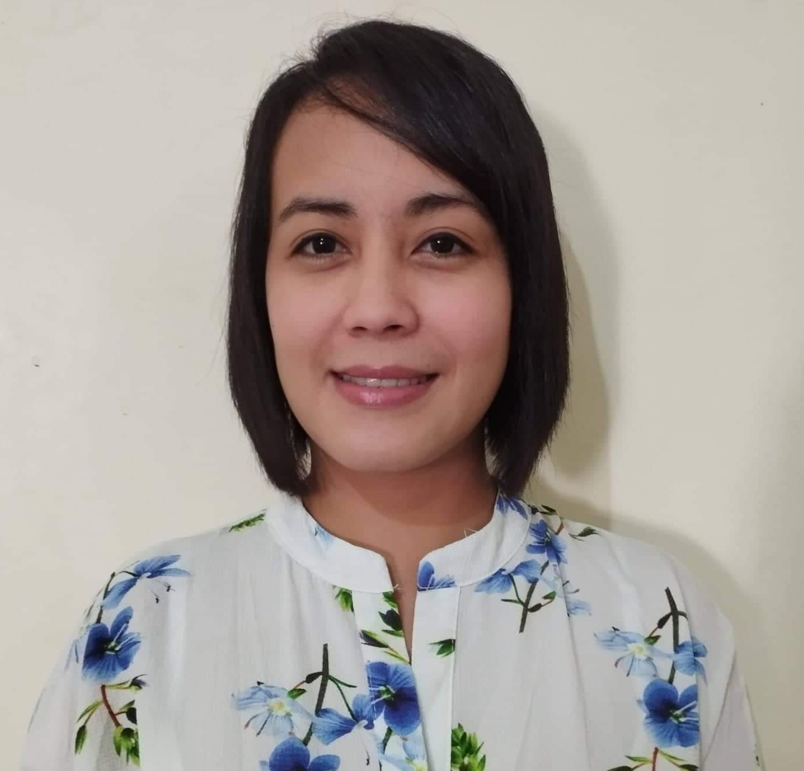

Gelybell A. Barredo
USRN, PHRN, SCHSRN
Sitio Harangan Groto Brgy Plaza Aldea, Tanay Rizal Philippines
09422202979
gelyphen@gmail.com
SUMMARY
I have over 10 years of nursing experience working in 2 different countries. I can speak Taglog, Arabic, and English. I am always looking for positions that wil help me grow in my career as a nurse.
EDUCATION
Tertiary Education
Bachelor of Science in Nursing
Our Lady Of Fatima University
Antipolo City, Philippines
June 2008 to March 2012
LICENSES
-
NY, USA NCLEX License
No.: 853843-01
-
Date of Issue:08/01/2022
-
Date of Expiration:07/31/2025
-
Saudi Council License
No.: 15RN0011456
-
Date of Issue: 07/08/2018
-
Date of Expiration:03/27/2022
-
Philippine Nursing License
No.: PRC ID 0763889
-
Date of Issue: 09/27/2012
-
Date of Expiration: 04/25/2024
ORGANIZATIONAL AFFILIATIONS
-
Philippine Nursing Association
-
Saudi Council for Health Specialist
-
New York Boarding of Nursing